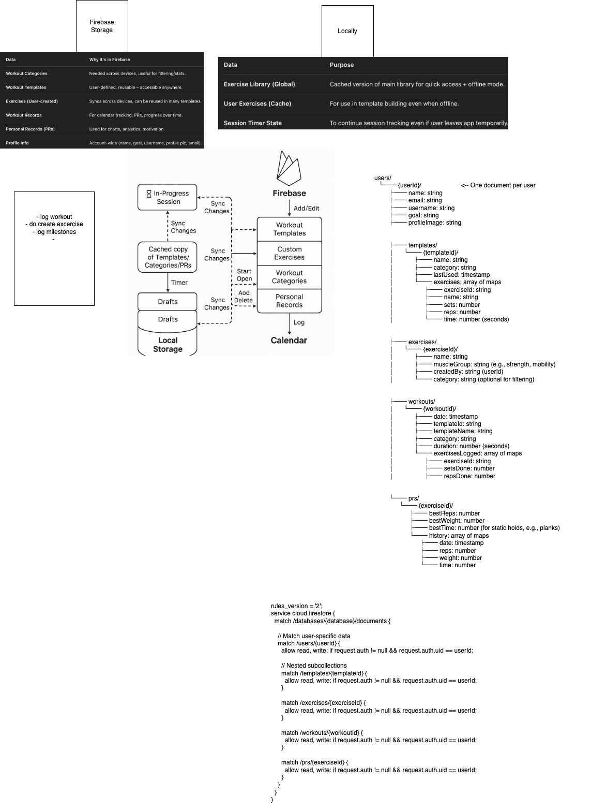
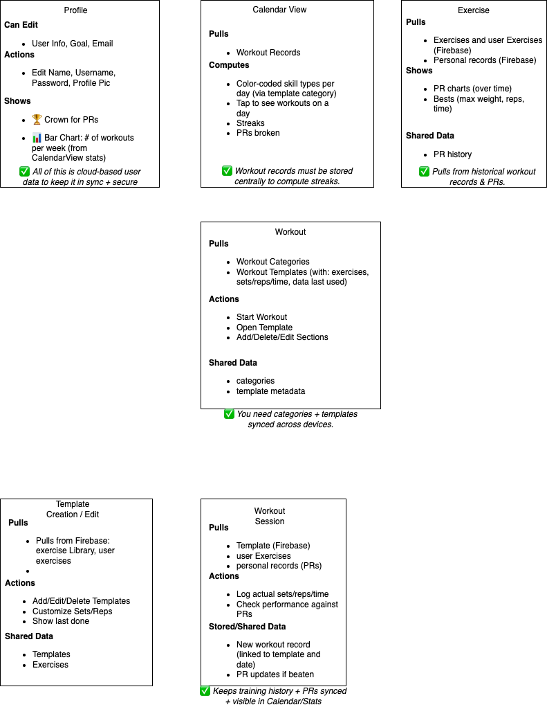

Overview
No Limits is a fitness and activity tracker designed to improve bodyweight and calisthenics performance. This diagram highlights the main system architecture and the flow of user interactions.

Tracking Engine
The core engine captures exercises, repetitions, and user metrics in real-time. This breakdown shows how data is processed and visualized to provide actionable insights for all fitness levels.

User Dashboard
The dashboard presents an overview of daily workouts, progress, and personalized recommendations. The zig-zag layout keeps the flow dynamic while reading through each section.

Analytics
Data analytics engine generates performance trends and visual insights. Users can track progress over time, see improvement areas, and optimize their workouts efficiently.